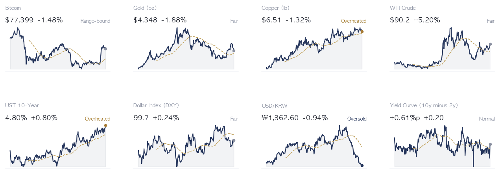
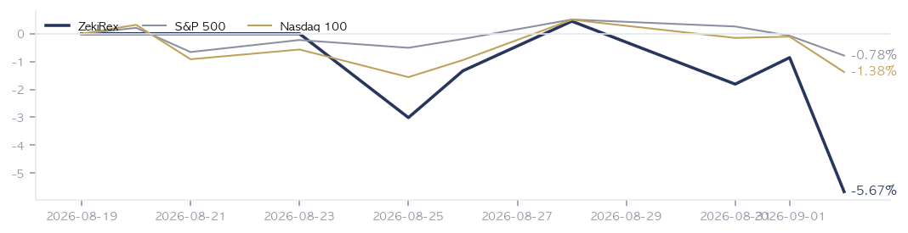

|
ZekiRex™ Apex US — 2026년 9월 2일
오늘의 판단 · 1/2
데이터 기준 9/1 (ET) 종가 · 밤사이 서울 9/2 종가(현지시간) |
ZekiRex™ |
|
|
|
THE REX CALL
유가가 물가 기대를 밀어 올리고 그 기대가 국채를 팔게 만든 하루였습니다. 미 10년물은 9/1 4.80%로 마감해 20개월 만의 최고였고, 값이 먼저 깎인 것은 이익이 먼 미래에 있는 종목이었습니다.
한 종목을 손절하고 한 종목을 새로 샀습니다. 얼라이언트(ALNT)는 손절선 $88.17이 뚫려 뉴욕 9/1 종가 $86.45에 정리됐고 −9.80%(−$244,938)를 실현했습니다. 빈 자리는 마라톤페트롤리엄(MPC)이 $383.00에 채웠습니다 — 총자산의 23.9%, 손절 $352.36입니다.
오늘 반드시 알아야 할 것
1. 브렌트유가 9/1에 4.6% 올라 $94.70, WTI가 5.2% 올라 $90.20이 됐습니다. 미 10년물은 뉴욕 9/1 종가 4.80%로 4bp 올라 20개월 만의 최고였습니다. 물가 기대가 오르면 채권이 팔리고, 오른 금리가 주식을 누릅니다. 2. 서울은 9/2 3.99% 내린 6,562.72로 마감했습니다(현지시간). 같은 8월 한국 수출은 68.7% 늘고 반도체가 466억 5천만 달러로 월간 최대였습니다 — 내린 원인은 수요 쪽에 없습니다. 3. 일본 10년물 국채 금리가 3%를 넘어 1996년 이후 가장 높습니다. 해외 채권에 나가 있던 일본 자금이 자국으로 돌아오면 미 장기물의 매수자가 한 자리 줄어듭니다. 4. 델(DELL)이 9/1 마감 뒤 2027 회계연도 전망을 250억 달러 올렸고 시간외 거래에서 9% 올랐다고 로이터와 CNBC가 전했습니다. 인공지능 서버 수요는 아직 꺾이지 않았습니다. 5. 유로존 8월 소비자물가가 3.3%로 올랐고 에너지가 14.3% 뛰었습니다. 유럽중앙은행 결정은 9/10, 미국 8월 고용보고서는 9/4 08:30 ET입니다.
| |
|
최근 10거래일 국면 추이 (왼쪽이 과거) 방향 — 어디까지 왔나. 국면은 노랑입니다. S&P 500과 나스닥이 노랑이고 러셀 2000은 초록으로, 우리 판정에서는 소형주 쪽의 장기 구조가 아직 온전합니다. 9/1 하루 러셀이 가장 크게 밀린 것과 어긋나 보이지만 두 수치는 재는 기간이 다릅니다 — 하루의 등락과 장기 구조는 같은 질문이 아닙니다.
제가 방향을 맞힐 수는 없습니다. 색이 좋아지려면 새 판정이 3거래일 연속 확인돼야 하고, 나빠지는 방향은 같은 날 즉시 반영됩니다. 그리고 지금 규칙에서 이 색은 진입을 막지 않습니다. 위험 관리는 종목별 손절과 자리당 25% 사이징이 전부 맡습니다.
| |
| 오늘의 조치 |
| 매수 | Marathon Petroleum MPC | | 매도 | Allient ALNT — 하드 손절 −8% 도달 |
|
| 종목 | 비중 | 현재가 | 손절가 | 여유 | 다음 이벤트 | | ASML | 25% | $1,665.14 | $1,622.66 | +2.6% | 실적 10-14 | | DELL | 25% | $425.00 | $406.71 | +4.5% | 실적 09-01 | | MU | 26% | $933.44 | $889.44 | +4.9% | 실적 09-30 | | MPC | 24% | $383.00 | $352.36 | +8.7% | 실적 11-03 |
|
| 관문을 통과한 종목 — 자리가 없어 담지 못한 이름들 |
| 에너지·정유 8 | | PSX Phillips 66 | RS 96 | 종합 98 | $252.02 | | LPG Dorian LPG Ltd. | RS 91 | 종합 98 | $50.86 | | DINO HF Sinclair Corporat | RS 97 | 종합 97 | $103.97 | | PAGP Plains GP Holdings, | RS 86 | 종합 97 | $28.47 | | VG Venture Global, Inc. | RS 86 | 종합 97 | $15.11 | | CVE Cenovus Energy Inc | RS 90 | 종합 94 | $33.13 | | KNTK Kinetik Holdings Inc | RS 81 | 종합 94 | $55.03 | | OII Oceaneering Internat | RS 95 | 종합 93 | $51.32 | | 소재·광물 2 | | TECK Teck Resources Ltd | RS 82 | 종합 96 | $66.79 | | SCCO Southern Copper Corp | RS 85 | 종합 94 | $201.61 | | 헬스케어 2 | | KRYS Krystal Biotech, Inc | RS 91 | 종합 94 | $363.84 | | AMGN Amgen Inc. | RS 87 | 종합 94 | $438.12 | | 금융 1 | | MRX Marex Group Limited | RS 97 | 종합 97 | $72.62 | | 소비 1 | | CHEF The Chefs' Warehouse | RS 97 | 종합 94 | $115.52 | | 기타 1 | | GEO Geo Group Inc (The) | RS 97 | 종합 95 | $30.53 |
|
왜 못 담았나. 규칙상 자리는 넷뿐이고 각 자리에 총자산 25%가 들어갑니다 — 한 종목이 −8%에 걸려도 계좌 전체로는 2% 손실이 되도록 맞춘 구조입니다. 자리를 비우는 길은 손절과 오실레이터 이탈 둘뿐이라, 더 좋은 후보가 나와도 갈아타지 않습니다.
통과 목록이 말하는 것. 60개가 35개 업종에 흩어져 있고 상위 3개 업종을 합쳐도 13종목(22%)뿐입니다. 시장의 강세는 넓습니다. 우리 4자리는 반도체·하드웨어 3, 에너지·정유 1로 나뉘어 있고 가장 큰 쪽이 반도체·하드웨어입니다 — 그래서 하루 등락이 지수와 평균 1.6%p 벌어졌고, 가장 크게 갈린 9/1 세션에는 S&P 500 보다 4.1%p 더 내렸습니다. 아래는 그중 종합점수 상위 15개이며, 매수 추천이 아니라 자리가 열리면 작업을 시작할 순서입니다. |
| 매수 금액 산출 근거 |
Marathon Petroleum MPC | 포트폴리오 가치 V | 9432545.957462769 | | 목표 포지션 T = V × 25% | 2358136.4893656923 | | 매수 금액 F = MIN(T, 매수여력) | 2256725.150394897 | | 하한 V × 8% | 754603.6765970215 | | 손절 시 포트 영향 | 1.913990272040552 |
주문 실행 |
조건은 통과했지만 품질 하한에서 걸린 종목 | Dave DAVE — 종합 62 — 품질 하한(70) 미달 | | TG Therapeutics TGTX — 종합 59 — 품질 하한(70) 미달 | | Bread Financial Holdings BFH — 종합 67 — 품질 하한(70) 미달 | | CVR Energy CVI — 종합 59 — 품질 하한(70) 미달 |
|
| 핵심 지표 |
S&P 500 7,631 -0.71% · 고점 −2.1% 9/1에 0.71% 내린 7,631입니다. 나스닥·러셀 2000보다 덜 내려, 대형주가 지수를 대신 들고 있음을 보여줍니다. 그 힘이 빠지면 지수도 함께 내려옵니다. 상단권 | 나스닥 종합 26,100 -1.03% · 고점 −3.7% 상단권 | 러셀 2000 2,920 -1.23% · 고점 −4.8% 9/1에 1.23% 내려 4대 지수 가운데 가장 크게 밀렸습니다. 금리에 가장 약한 쪽이 먼저 팔린다는 뜻입니다. 이 격차가 좁아지면 금리로 설명하는 오늘의 논지가 흔들립니다. 상단권 | 미 국채 10년 4.80% 9/1에 4bp 올라 4.80%로 마감했고 20개월 만의 최고입니다. 유가가 물가 기대를 밀어 올린 결과가 주식보다 채권에서 먼저 나왔습니다. 이 수치가 4.80% 위에 머무는 동안에는 이익이 먼 미래에 있는 종목이 계속 불리합니다. 과열 | 달러인덱스 99.7 적정 | 포트폴리오 -5.67% 현금 0% · 보유 4종목 9/1 하루에 S&P 500보다 4.11%p 더 내렸습니다. 네 자리 가운데 셋이 반도체·하드웨어에 있어 금리 상승분이 계좌에 그대로 실렸습니다. 정유 한 자리가 들어온 것이 그 쏠림을 처음으로 줄였습니다. 설정 이후 |
|
| 한 줄 정리: 유가가 금리를 밀고, 금리가 값을 매기는 방식을 바꿉니다. 오늘 편지의 모든 항목 — 서울의 하락, 러셀 2000의 부진, 정유 업종의 강세, 그리고 자리 하나가 바뀐 것 — 이 그 하나의 움직임에 붙어 있습니다. |
|
|
|
판단의 근거 · 2/2
데이터 기준 9/1 (ET) 종가 · 밤사이 서울 9/2 종가(현지시간) |
ZekiRex™ |
|
|
| 오늘 반드시 알아야 할 것 |
|
유가가 만든 금리가 20개월 만의 최고에서 마감했습니다
미국과 이란이 공격을 주고받으며 브렌트유가 9/1에 4.6% 올라 $94.70이 됐고, 그 결과는 주식이 아니라 국채에서 먼저 나왔습니다. 미 10년물은 4.80%로 4bp 올라 20개월 만의 최고에서 마쳤고 30년물은 5.27%입니다. 같은 날 S&P 500은 0.71%, 나스닥은 1.03%, 러셀 2000은 1.23% 내렸습니다. 내린 폭의 순서가 그대로 금리 민감도의 순서입니다. 왜 그런가. 갈리는 것은 원인을 유가 하나로 보는지입니다. 파이낸셜타임스와 월스트리트저널은 에너지 가격에 무게를 둡니다. 머니투데이와 경향신문은 물가와 정부 부채, 인공지능 투자를 대는 회사채 발행을 함께 듭니다. 원인이 유가뿐이라면 유가가 내릴 때 금리도 따라 내려오지만, 부채와 발행 물량이 섞이면 유가가 내려도 금리는 남습니다. 다음에 무엇이. 이번 주의 축은 9/4 08:30 ET 미국 8월 고용보고서입니다. 유가 충격 이후의 노동시장을 처음 확인하는 숫자이고, 고용이 강하면 인상 논거가 굳어져 장기 금리가 한 번 더 오릅니다. 그 앞에 9/10 유럽중앙은행 결정이 있고 9/15~16 연방공개시장위원회가 뒤를 잇습니다.
그래서 우리는: 장기 금리가 20개월 최고에 있는 동안 값이 먼저 깎이는 것은 이익이 먼 미래에 있는 종목입니다. 반도체나 소프트웨어를 들고 계시다면 실적이 아니라 할인율 때문에 값이 깎이는 국면이므로, 다음 실적 발표로 회복을 가늠하기 전에 10년물의 방향을 먼저 확인하실 필요가 있습니다. 반대로 정유·에너지를 들고 계시다면 지금의 우위는 정제 마진이라는 현재 이익에서 나온 것이라, 유가가 진정되면 같은 속도로 되돌아옵니다. 저희가 자리 하나를 정유로 채운 것도 그 우위가 오래갈 것이라 보아서가 아니라 규칙이 그 순서를 가리켰기 때문입니다.
Rex Lens™
| |
| 그 밖에 알아야 할 것 |
| 연준 9월 회의 · 연방공개시장위원회가 9월 15일과 16일에 회의를 엽니다. 장기 금리가 뛰자 연준이 올리면 한국은행도 따라 올려야 한다는 관측이 나온다고 머니투데이가 9월 2일 전했습니다. (Money Today) → 저희 규칙은 금리를 예측하지 않지만 국면 판정과 변동성은 그날 바뀝니다. 9월 16일은 이번 달 변동성의 예정된 출처입니다. | | 유럽중앙은행 9월 10일 결정 · 유로존 8월 소비자물가가 3.3%로 올랐고 에너지가 14.3% 뛴 것이 주된 원인이라고 유로뉴스가 전했으며, 시장은 9월 10일 0.25%포인트 인상을 거의 전부 반영하고 있습니다. (Euronews) → 미국과 유럽이 같은 방향으로 긴축하면 달러의 방향은 흐려지고 은행과 원자재의 상대강도가 갈립니다. 저희 통과 명단에는 은행이 6개 있습니다. | | 9월 4일 미국 고용 보고서 · 미국 노동통계국이 9월 4일 오전 8시 30분 동부시간에 8월 고용 보고서를 발표합니다. 유가 충격 이후의 노동시장을 처음으로 확인하는 자리입니다. (U.S. Bureau of Labor Statistics) → 고용이 강하면 인상 논거가 굳어지고 장기 금리가 한 번 더 오릅니다. 금요일 아침의 숫자가 다음 주 아시아 개장까지 이어집니다. | | 유럽연합이 중국에 준 10월 시한 · 유럽연합 통상 담당 집행위원이 중국을 향해 10월까지 구체적 성과를 내지 않으면 더 강한 조치를 취하겠다고 9월 2일 공개된 유로뉴스 인터뷰에서 밝혔습니다. (Euronews) → 미국 관세와는 별개의 두 번째 전선입니다. 유럽 매출 비중이 큰 아시아 제조업체에는 4분기 초가 다시 시험대가 됩니다. | | 일본 국채 금리 30년 만의 최고 · 일본 10년물 국채 금리가 3%를 넘어 1996년 이후 30년 만의 최고를 기록했고, 해외 채권에 나가 있던 일본 자금이 조금씩 돌아오고 있다고 머니투데이와 재팬타임스가 전했습니다. (Money Today · Japan Times) → 일본이 자국 채권으로 돈을 되부르면 미국 장기물의 매수자가 한 자리 줄어듭니다. 저희 규칙은 이를 예측하지 않고 국면 판정으로만 받습니다. |
|
한국과 미국을 잇는 것: 뉴욕에서 오른 금리가 서울의 반도체주를 눌렀습니다. 미 10년물이 20개월 최고로 가면 원화 자산에 요구되는 수익률도 함께 올라가고, 이익이 먼 미래에 있는 종목부터 팔립니다. 국고채 3년물은 9/2 3.93%로 올랐습니다(현지시간). 8월 수출이 68.7% 늘고 반도체가 월간 최대를 쓴 주에 서울이 3.99% 내린 이유가 그것입니다. 미국 투자자가 여기서 볼 것은 아시아의 수요가 아니라 뉴욕과 런던의 금리입니다. |
 Rex Pulse™ — 지수·가상자산 / 통화 / 원자재 / 채권 16종, 1년 추이와 50일 이동평균(점선) · 기준 뉴욕 9/1 종가, 서울 9/2 종가(현지시간) |
세 가지를 겹쳐 보십시오. 미 국채 10년 4.80% — 9/1에 4bp 올라 20개월 만의 최고입니다. 할인율이 오르면 먼 미래의 이익부터 값이 깎입니다. 브렌트유 $94.70 — 9/1에 4.6% 올라 물가 기대를 다시 밀어 올렸고, 금리가 내려올 여지를 좁힙니다. 러셀 2000 −1.23% — S&P 500(−0.71%)보다 크게 내려, 금리에 약한 쪽이 먼저 밀린다는 것을 보여줍니다. 셋을 겹치면 그림이 하나로 모입니다. 유가가 금리를 밀고, 금리가 값을 매기는 순서를 바꿉니다. 봐야 할 것은 10년물이 4.80% 아래로 돌아오는가입니다. |
 색은 당일 등락(짙을수록 큼), 타일은 시가총액입니다. 상단에 당일 상승·하락 1위가 적혀 있고, 큰 칸이 움직인 날이 지수가 움직인 날이라는 뜻입니다 — 아래 리더십 순위(추세의 힘)와 함께 읽으십시오. |
| 리더십 — 업종 강세 순위 |
강세 상위 | 01 Semiconductor Equipment & 92—1 gap | | 02 Communication Equipment 91—36 | | 03 Computer Hardware 88—70 | | 04 Gold 85—98 | | 05 Drug Manufacturers - Gener 80+126 gap | | 06 Semiconductors 62-33 gap |
| 약세 하위 | 01 Utilities - Independent Po 6—40 | | 02 Footwear & Accessories 6—87 gap | | 03 Building Materials 13-345 gap | | 04 Leisure 14+281 gap | | 05 Apparel Retail 19—77 gap |
|
|
| 업종 순위는 상대강도를 재는 것이지 자금의 방향을 직접 재는 것이 아닙니다. 그래도 9/1의 이동은 한 방향을 가리킵니다. 올라온 쪽은 원유·가스 장비·서비스 +5, 원유·가스 중류 +5입니다. 보험도 함께 올라 생명보험 +7, 손해보험 +8입니다. 내려간 쪽은 항공 −4, 트럭운송 −7, 자동차 제조 −15, 항공우주·방산 −16입니다. 오르는 쪽은 유가가 이익이 되는 업종이고 내려가는 쪽은 유가가 비용이 되는 업종입니다. 순위의 방향은 유가 상승이 하루짜리 사건으로 다뤄지지 않고 있음을 보여줍니다. 그래서 봐야 할 것은 이 순위가 아니라 그 뒤집힘입니다 — 항공과 트럭운송이 다시 올라오면 유가가 정점을 지났다는 첫 신호가 됩니다. 평가 가능한 74개 업종(종목 5개 이상)을 오늘 강세 순으로 줄 세운 뒤 위 5개와 아래 5개만 실었습니다, 여기에 본문이 지목했거나 우리가 보유한 업종 1개를 더했습니다. 큰 숫자는 업종 평균 RS(강도)이고, 뒤에 붙은 ±는 어제 대비 순위 변화입니다. 강세 목록에 있다고 매수 신호가 아니라, 우리 관문을 통과한 종목이 어느 업종에서 나오는지 보는 배경입니다. 세 번째 숫자는 거래대금 쏠림의 업종 백분위입니다 — 미국에는 한국 같은 투자주체별 공표치가 없어 20일 거래대금을 60일 평균과 견준 대용치이며, '기관이 산다'가 아니라 '거래가 몰린다'는 뜻입니다. 강도와 40%p 이상 벌어지면 'gap'으로 표시했고, 이는 매매 신호가 아니라 확인해 볼 곳입니다 — 2026-08-31 사전등록 검정에서 이 격차가 이후 수익을 예측한다는 근거는 한·미 8개 셀 전부 확인되지 않았습니다. |
| Rex 25™ — 당일 등락률 전체 순위 |
| 01 DINO HF Sinclair+2.79% | | 02 KRYS Krystal Biotech+2.68% | | 03 ● MPC Marathon Petroleum+2.59% | | 04 PSX Phillips 66+1.75% | | 05 IMAX Imax+1.63% | | 06 DAVE Dave+1.46% | | 07 MGNI Magnite+1.41% | | 08 OII Oceaneering Internatio+0.69% | | 09 LPG Dorian LPG+0.68% | | 10 MRX Marex Group+0.60% | | 11 APA APA+0.38% | | 12 GEO Geo Group Inc (The) RE+0.20% | | 13 ENVA Enova International-0.72% | | 14 CHEF The Chefs' Warehouse-0.79% | | 15 SN SharkNinja-0.85% | | 16 BFH Bread Financial Holdin-0.99% | | 17 WT WisdomTree-1.00% | | 18 EAT Brinker International-1.08% | | 19 DGII Digi International-1.10% | | 20 TGTX TG Therapeutics-1.15% | | 21 CXW CoreCivic-1.49% | | 22 CGAU Centerra Gold-1.57% | | 23 LTH Life Time Group Holdin-3.42% | | 24 OKTA Okta-3.86% | | 25 ● DELL Dell Technologies-6.80% |
|
7,911개에서 60개가 남았습니다. 그중 15개가 정유·가스이고 반도체로 분류되는 것은 2개입니다. 하루 상승 상위 5개 가운데 3개가 정유입니다 — HF 싱클레어 +2.79%, 마라톤페트롤리엄 +2.59%, 필립스66 +1.75%. 하락 1위는 델의 −6.80%이고 거래량이 50일 평균보다 141% 많았습니다. 여기서 '1일 하락'과 매수 판단은 재는 기간이 다릅니다. 델의 실적은 9/1 장이 끝난 뒤에 나왔고 그 숫자는 이 표에 들어 있지 않습니다. 품질 하한에서 걸러진 것은 데이브(종합 62)와 CVR에너지(59)입니다 — 상대강도만으로는 후보에 오르지만 이익의 질이 받쳐주지 않으면 관문 앞에서 멈춥니다. |
| ● 표시가 우리 보유 종목입니다. 순서는 등락률만 따릅니다 — 하락 상위에 보유 종목이 있어도 그 자체가 매도 신호는 아닙니다. 매도는 −8% 손절과 오실레이터 이탈, 둘뿐입니다. |
| 보유 비중 — 하한 8% / 진입 25% |
| Micron Technology MU25.6% | | Dell Technologies DELL25.5% | | ASML Holding ASML25.0% | | Marathon Petroleum MPC23.9% |
25%는 진입 시점의 크기이지 보유 한도가 아닙니다. 오른 종목을 크다는 이유로 줄이지 않습니다. |
 설정 이후 누적으로 계좌 −5.67%, S&P 500 −0.78%, 나스닥100 −1.38%입니다. 9/1 하루만 계좌가 S&P 500보다 4.11%p 더 내렸고, 측정 가능한 9회의 일간 괴리 평균은 1.57%p입니다. 네 자리 가운데 셋이 반도체·하드웨어에 있어 금리가 오르는 국면에서 계좌가 지수보다 크게 흔들립니다. 정유 한 자리가 들어온 것이 그 쏠림을 처음으로 줄였습니다. 봐야 할 것은 하루의 등락이 아니라 다음 자리 교체에서 이 괴리가 좁아지는가입니다. |
| 2026-09-01 종가 기준 심사 7,911종목 중 등급 산출 4,004종목 가운데 60종목이 조건을 통과했습니다. 조건 통과는 매수 추천이 아닙니다. |
| 출처: 야후 파이낸스, 16:00 ET 종가 · 서울외국환중개 고시환율(네이버 금융) · 네이버 금융 · 야후 파이낸스 |
|
본 리포트는 정보 제공 목적이며 투자 자문이 아닙니다. ZekiRex™ Apex US는 $10,000,000 규모의 시뮬레이션 포트폴리오를 규칙 기반으로 운용하며, 실제 계좌·주문과 무관합니다. 투자에는 손실 위험이 따릅니다. |
| This is the Rex Way, ZekiRex™ |